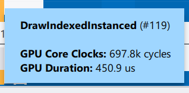

Intel® Graphics Performance Analyzers
User Guide
Bar Chart
This panel is shown every time a frame is opened and consists of the following parts:
Bar Chart Toolbar. Adjust the display of events in the Bar Chart and the API Log.
Bar Chart View. Visualize performance in the frame or selected events over time (if metrics are available for the target system).
Bar Chart Range Selector. Focus on a specific range in the Bar Chart View.
Bar Chart Toolbar
Use the Bar Chart Toolbar for configuration:
Toggle Advanced Profiling Mode. This button is active only if the system supports the full list of Intel performance counters.
Toggle Collect fast/stable metrics. Choose a metric collection mode. Typically, the Fast metric collection has better performance, but metric values may be inaccurate. If the toggle is enabled, bars of events with significant metric deviation are marked with 2 purple lines. Their heights correspond to the metric max and min values.
X drop-down button. Choose an additive metric for the X-axis to see specific performance aspects in the frame.
Y drop-down button. Choose a metric for the Y-axis to see specific performance aspects in the frame.
Group by drop-down button. Group events on the Bar Chart by:
Debug Regions - user-defined instrumentation (Microsoft PIX) regions, this setting also shows markers in the API Log.
Custom Regions - named regions in the API Log. To create custom regions, see the API Log description.
Draw Calls - events, each bar corresponds to a single event.
Render Targets - bound render targets
Shader Sets - bound shaders (DirectX* 11, DirectX* 12, and Vulkan*)
Command Lists - command lists and bundles (DirectX* 12 and Vulkan*)
Pipeline States - bound pipeline state objects (DirectX* 12 and Vulkan*)
Regions (groups) expanded in the API Log are expanded in the Bar Chart.
Chart Regions drop-down button. Add a markup on the top of the Bar Chart View to highlight the same groups that are available in the Group By drop-down list.
Color By drop-down button. Choose a coloring scheme for the bars in the Bar Chart View. This setting is saved and applied to the next frame opening. The button is available only if the system supports the full list of Intel performance counters.
Show the color legend used in the Bar Chart View for events and bottlenecks. A legend for bottlenecks is available only if the system supports the full list of Intel performance counters. Hovering over or selecting items in the Bar Chart View highlights the corresponding legend items. Select or highlight matching items in the Bar Chart View by clicking or hovering over the legend items.
Bar Chart View
Use the Bar Chart View to see individual events or groups of events and their contribution to the overall frame time. An event is a graphics API function that produces a GPU activity, such as draw calls or clear calls. Once you load the capture file, items display as vertical bars. These items can be any of the types listed in the legend. The Bar Chart View shows the items in the GPU execution order, starting from the left. By default, the height of a bar indicates the duration of the GPU execution. GPU Duration is measured in microseconds.
Zoom into or out of particular items in the Bar Chart View using the mouse wheel or the Bar Chart Range Selector. By default, the vertical auto-scaling is enabled. To enable or disable the vertical auto-scaling, click the / toggle button. Change the vertical scaling of the Bar Chart View manually by using the or  buttons respectively.
buttons respectively.
The Bar Chart View uses the following set of controls:
| Action | Hotkey or Shortcut |
|---|---|
|
Select Item |
Click |
|
Select Items |
Click + Drag |
|
Select Range |
Shift + Click |
|
Toggle Item Selection |
Ctrl + Click |
|
Toggle Items Selection |
Ctrl + Click + Drag |
| Navigate Through Items |
Arrow Keys |
|
Select First/Last Item |
Home/End |
|
Extend Selection |
Shift + Arrow Keys, Shift + Page Up/Down |
|
Extend Selection to First/Last Item |
Shift + Home/End |
|
Zoom |
mouse wheel |
|
Horizontal scrolling |
Shift + mouse wheel |
|
Select All |
Ctrl + A |
To analyze metrics data and resources for specific parts of the frame, select a single item or a group of items in the bar chart. When you make a selection, Graphics Frame Analyzer updates all other components in Profiling View to reflect the state of the frame for the function calls.
The Bar Chart View displays:
Selected items in orange.
Partially selected regions in orange hatching.
Items filtered out in the API Log in gray.
Partially filtered out regions in gray hatching.
Metric values of an event if hovered on with a mouse.
Or if you enable the Collect fast/stable metrics.
Resize the Bar Chart View or completely hide it by moving the draggable splitter at the bottom of the Bar Chart. Double-click on the splitter to hide or show the Bar Chart View.
Bar Chart Range Selector
Use the Bar Chart Range Selector to zoom into particular events in the Bar Chart View.
The Bar Chart Range Selector displays an overview of the entire frame timeline. The window inside the Bar Chart Range Selector displays the part of the frame that is displayed in the Bar Chart View. To adjust the horizontal scaling of the Bar Chart View, drag the window sliders to stretch or shrink it. To shift the Bar Chart View to a desired location, click on the Bar Chart Range Selector chart outside the window or drag the window to that location.
Toggle between the frame timeline and the current view by double-clicking the window inside Bar Chart Range Selector.
Advanced Profiling Mode
Runs a hot spot analysis to identify performance bottlenecks in individual events. This mode groups these events by the causes of bottlenecks and by pipeline states. Data representation changes in all Graphics Frame Analyzer components:
The bars in the Bar Chart View represent grouped calls, with the largest group positioned on the leftmost side.
The API Log tab provides short descriptions of the discovered bottlenecks and of the pipeline states.
The Bottlenecks tab of the Metrics Pane provides detailed descriptions of bottlenecks that were discovered. You can also learn about potential ways to fix them. To see the description, click on blocks that have bottlenecks marked with red or yellow.
In the Advanced Profiling Mode, group calls by:
Bottleneck/State (default) - bottleneck description and pipeline state.
Bottleneck - bottleneck description, secondary grouping by pipeline state within each group.
State - pipeline state, secondary grouping by bottleneck description within each group.
See Use Advanced Profiling Mode for more.
Metrics CSV Import/Export
You can import and export metrics data in CSV format to compare performance results for the same frame measured with different drivers or hardware settings:

Hover over the rectangles above the chart to view the *.csv file names. Here, you can see the color used in the Bar Chart View for each of the imported files. To remove the imported metrics data from the chart, click the corresponding rectangle.
If you import one or more CSV files into the bar chart, the X-axis is reset to a constant metric.
You can only import metrics data for the same frame file with the same set of metrics avaiable.
You cannot compare metrics data collected on different platforms with different sets of metrics.
Metrics Import is unavailable in Advanced Profiling Mode. Metrics imported previously cannot be displayed.